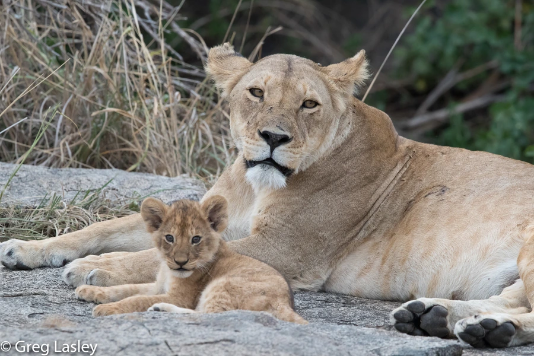

哺乳动物 · 动物界
狮子 Panthera leo

唯一营群居生活的大型猫科动物，雌狮协作捕猎、雄狮守卫领地，是非洲稀树草原上最具代表性的猛兽。
- 分类
- 门脊索动物门纲哺乳纲目食肉目科猫科属豹属
- 栖息环境
- 稀树草原、疏林与半荒漠，偏好有遮蔽和充足猎物的开阔地带
- 地理分布
- 撒哈拉以南非洲，印度吉尔国家公园有唯一的亚洲狮种群
- 保护级别
- IUCN 易危（VU）
物种志
狮子是唯一群居的猫科动物，雄狮体长 1.7–2.5 米（含尾），体重 150–240 kg，雌狮较小，约 110–190 kg。成年雄狮颈部生有鬃毛，颜色从浅黄到深黑不等；雌狮无鬃毛，体形修长，更适合长距离追击。
狮群通常由 2–18 只亲缘雌狮及其幼仔组成，并伴随 1–7 只雄狮。雌狮承担大部分捕猎工作，多只协作围堵角马、斑马和羚羊；雄狮负责守卫领地并抵御外来雄狮。狮子的吼声在夜间可传出约 8 km，用于宣告领地。野生狮子分布于撒哈拉以南非洲，亚洲狮仅剩印度吉尔森林一处种群。栖息地缩减、猎物减少和人兽冲突使全球种群在过去数十年明显下降。
形态与习性
- 食性角马、斑马、羚羊等，雌狮承担主要捕猎
- 体长雄狮 1.7–2.5 m、雌狮 1.4–1.8 m（含尾）
- 体重雄狮 150–240 kg，雌狮 110–190 kg
- 寿命野外约 12–16 年
- 繁殖妊娠期约 110 天，每胎 1–4 仔
- 社会结构群居，狮群由亲缘雌狮与幼仔组成
- 活动节律黄昏至清晨活跃，白天多休息
趣味知识
- 狮子是唯一群居的猫科动物，狮群由亲缘雌狮及其后代组成。
- 狮群中大部分捕猎由雌狮完成，雄狮主要负责守卫领地。
- 雄狮的鬃毛越深越浓密，往往代表个体更健康、更具竞争力。
- 狮子的吼声在夜间可传出约 8 km，用来宣告领地范围。